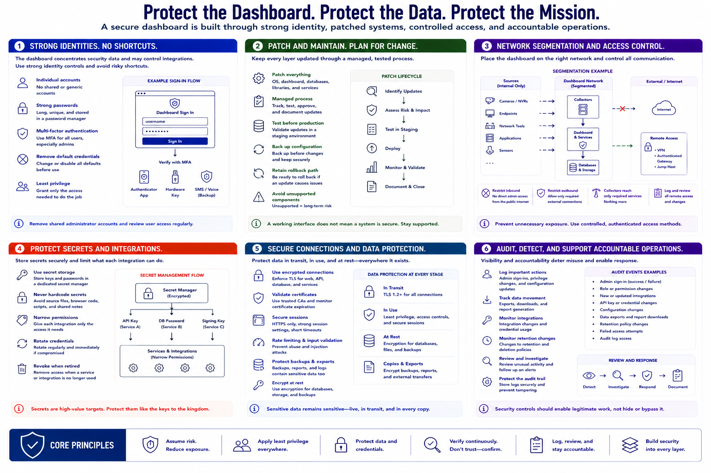

Security of the Dashboard Itself
Connecting to LMS... Progress: in progress

Narration
The dashboard is a high-value system because it concentrates security data and may control integrations. Protect it with individual accounts, strong passwords, and multi-factor authentication where available. Remove default credentials and avoid shared administrator accounts.
Patch the operating system, dashboard software, databases, libraries, and supporting services through a managed process. Test significant updates, back up configuration, and retain a rollback path. Unsupported components create long-term risk even when the interface appears to work.
Place the dashboard on an appropriate network segment and restrict inbound and outbound communication. Collectors should reach only required services. Administrative interfaces should not be exposed directly to the public internet. Use a controlled VPN, authenticated gateway, or similarly protected method for legitimate remote access.
Store API keys, database passwords, signing keys, and service credentials in protected secret storage rather than source files, browser code, or shared notes. Give each integration narrow permissions, rotate credentials when needed, and revoke them when a service is retired.
Use encrypted connections where appropriate and validate certificates. Apply secure session settings, rate limits, input validation, and defenses supplied by maintained frameworks. Backups and exported reports deserve the same protection as the live dashboard because they may contain equivalent sensitive data.
Log administrative sign-ins, privilege changes, integration updates, exports, and retention changes. Review unusual activity and protect the audit trail. Security controls should support authorized operations without enabling covert access, bypassing controls, or hiding actions from accountable oversight.